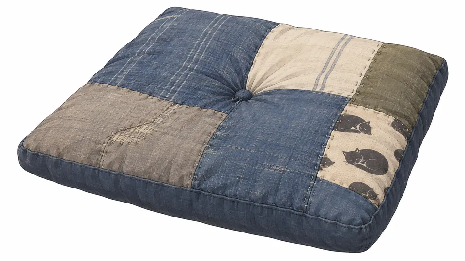

WORLD-BUILDING · GADGETS & PROPS
ガジェット一覧
『EARTH AFTER』の世界を彩る機械と小物です。ドロ（人間によく似たアンドロイド）だけでなく、お掃除ロボットや手作りの道具が当たり前にある暮らしを描くための資料です。登場シーンが決まっていないものは「登場未定」としています。
チーム N3Co（ねこさん） 月真猫・Nokosu・ねね
3人とも猫が好き。「3＝さん」と読ませて、ねこさん。
WORLD-BUILDING · GADGETS & PROPS
『EARTH AFTER』の世界を彩る機械と小物です。ドロ（人間によく似たアンドロイド）だけでなく、お掃除ロボットや手作りの道具が当たり前にある暮らしを描くための資料です。登場シーンが決まっていないものは「登場未定」としています。
チーム N3Co（ねこさん） 月真猫・Nokosu・ねね
3人とも猫が好き。「3＝さん」と読ませて、ねこさん。
「猫の手、借りれます」

機械いじりが好きなアカネの、自作・整備品
物資が少なくても、誰かの居場所を整え、物を直して使う


オリーブの帆布。隅に眠る猫のタグ。桔響やアカネの整備道具に。
欠けた縁と、猫の足あと。11の夜の食事場面などに。
藍の生地に、猫を刺した当て布。
編み込みケーブルに、猫のシルエットの布タグ。ドロの給電席に。
藍・生成り・オリーブの継ぎはぎ。眠る猫柄の端切れ入り。
古い木箱に、かすれた猫のステンシル。物資置き場に。
見つけたら、ちょっといいことがある